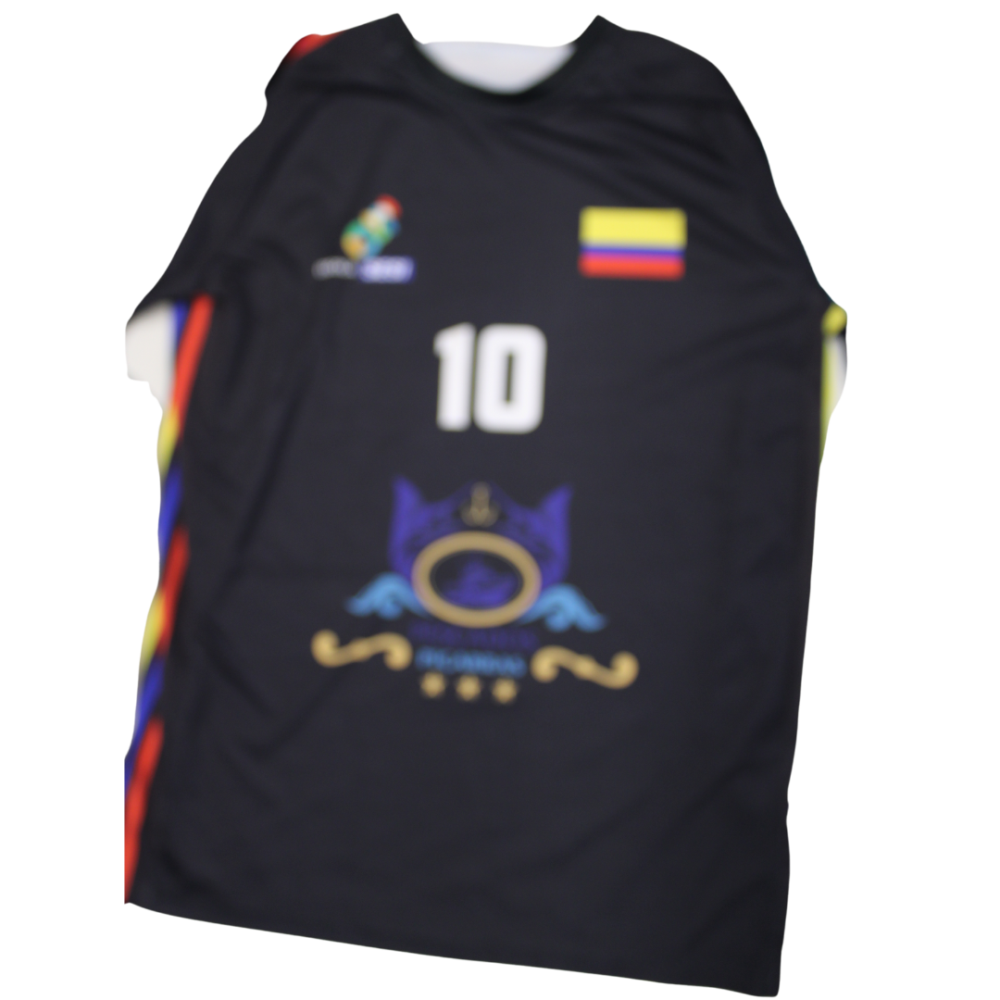
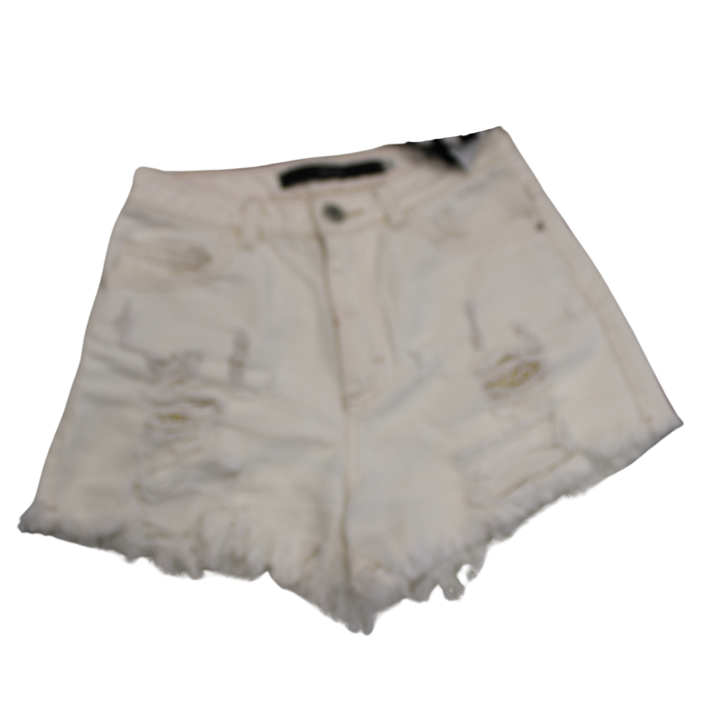
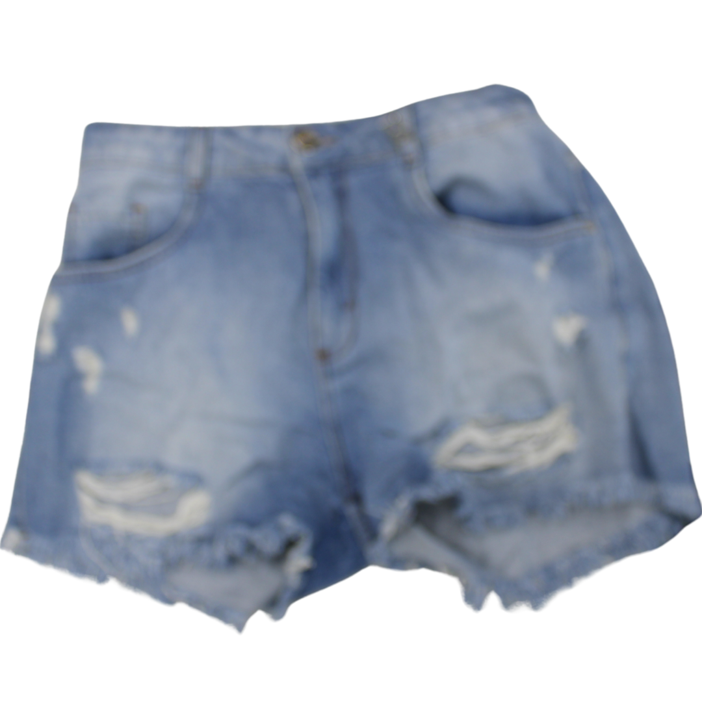
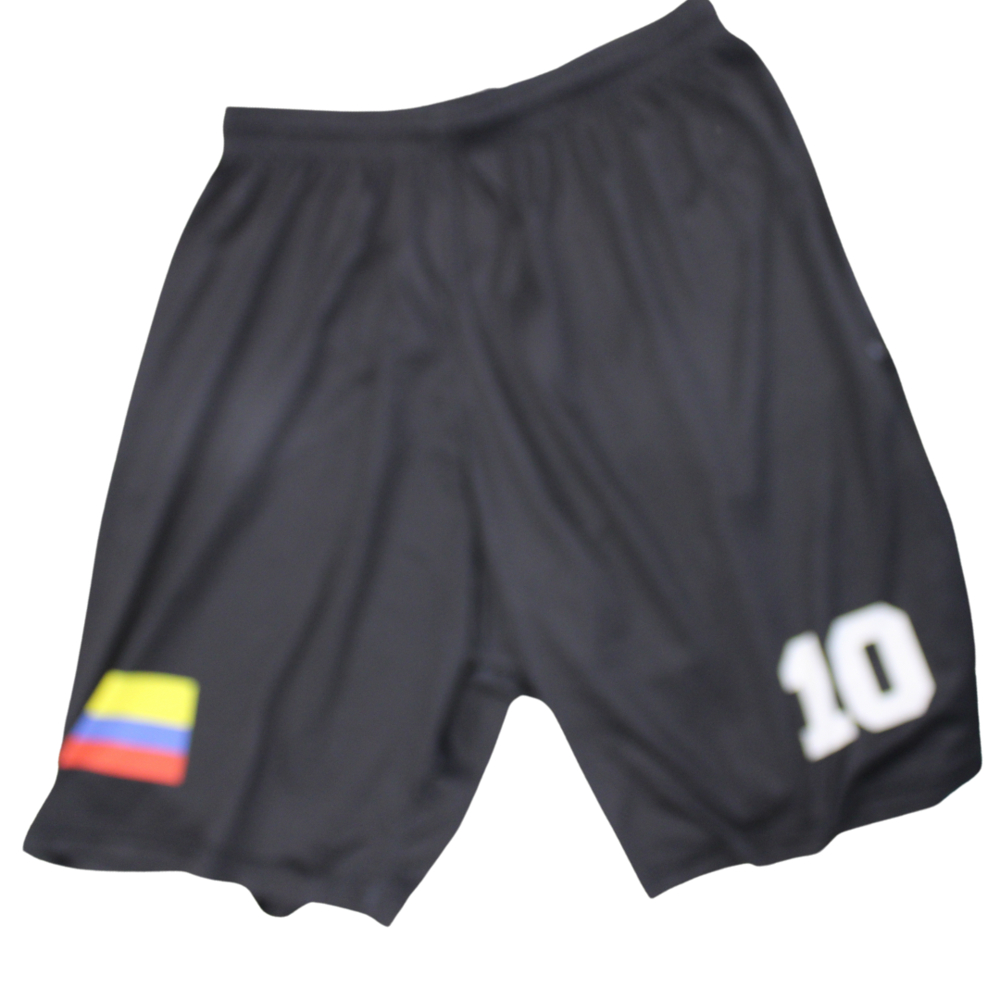

Produtos

Blusa Iasmin Rabelo
Camisa Crooped de algodão importada diretamente da casa de uma mega influencer renomada da Califórnia, Estados Unidos.
R$ 100,00

Blusa Beatriz Cercal
Camisa branca de algodão importado diretamente da Arábia Saudita.
R$ 250,00

Blusa Beatriz Crispim
Camisa branca de algodão com desenhos remetendo o dia no qual foi declarado a independência no Brasil.
R$ 250,00

Camisa Miguel Rocha
Camisa preta de poliéster, usada pelo jogador português Cristiano Ronaldo.
R$250,00

Shorts Beatriz Crispim
Shorts jeans na cor branca usado por Adriana Lima, uma modelo brasileira.
R$300,00

Shorts Beatriz Cercal
Shorts jeans rasgado na cor azul claro usado por Angelina Jolie, uma atriz norte-americana.
R$250,00
.png)
Shorts Iasmin Rabelo
Shorts saia jeans na cor azul, usado por a Taylor Swift, uma cantora norte-americana.
R$300,00

Bermuda Miguel Rocha
Bermuda preta usado por um jogador brasileiro famoso de altíssimo nível, tecido poliéster
R$400,00
Sobre Nós
Os alunos Beatriz Cercal, Beatriz Crispim, Iasmin Rabelo e Miguel Rocha, partindo dos estudos realizados em Matemática com o professor Jonathan Sardo, desenvolveram um Brechó Online, durante as aulas de Criação de Aplicativos com o professor Éwerton Cercal, baseado no estudo aprofundado de Análise Combinatória, visando a absorção total de conteúdo através de meios visuais, englobando demais componentes curriculares.